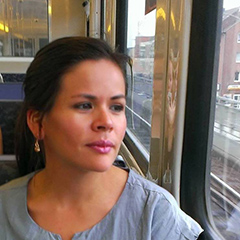
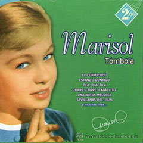

I think the Women Techmakers workshops are a great opportunity to learn new skills.
Everyone is really supportive and helpful.
Even though I didn't know anything about the technical side of building a website, I felt encouraged and motivated after my first meetup. I'm curious how my skills will develop.
I am really grateful that I came across the Women Techmakers. After taking part in a pair programming hands-on meet-up in San Francisco in 2014, I was looking for a similar meet-up in Hamburg. I found the Women Techmakers group, where I partake in a real project with all the aspects like UX design, web and mobile development, analytics and source control with GitHub.
We had hands-on sessions for most of these topics. Furthermore the group is one of the best in its organization using several channels (Meetup, Facebook, WTM-Website) to keep its members well informed and provide the documentation and resources of the last meet-ups.

Hola! My name is Berenice Pendzialek. Work as business consultant in Hamburg. I joined WTM Hamburg because I want to pick up code, which I kind of learned in high school. Also want to meet new people and develop web projects myself in the future. Look forward to visiting the future events and learn a lot.
Czesc! I joined Woman Techmakers to broaden my IT mind and to learn some cool stuff. I also wanted to meet other girls interested in technology. So far I've done different workshops like HTML, CSS, JavaScript and Android Studio! They all were great, very good prepared and I learned a lot. The only thing I miss, is the integration part. We should all go to a bar afterwards!
Girls, you are doing very good job here!
It sounds a good idea to put all my self-taught coding knowledge in more professional structures. Thanks WTM, it works.
I've been always interested in web development, but I just didn't have time to start with it. I think Women Teckmakers is a great idea to approach the learning of web development from gender equality and I want to be part of it!
I think this is a great community to include everybody, but especially women from completely different areas into the world of technology and programming. Enabling them to develop independent strategies.
Because I have a lot to do with software developers in my daily work, I wanted to get a better understanding of what they are doing and why everything is always more complex than I think ;-)
I joined Women Techmakers because I'm working in the IT business and wanted to learn more about what the software developers work with every day. I learned a lot about software developing until now, and I hope that after the workshops I'll be able to understand more of programming-related stuff in our daily business.

I am interested in learning new things!
I worked as a Programmer in the 70's, and as System Programmer with Siemens BS2000 and IBM MVS SP in the 80's. Then I stopped working because of my family. For me Women Techmakers is a good opportunity to learn about today's IT.
Hello! I've joined Women Techmakers because it is a good possibility to learn IT technologies in friendly atmosphere with another girls and support of developers. It is a good idea to join this group in case you want to know more about IT, but do not know from where to start. Each MeetUp is unique and contains interesting and cognitive materials. I like the format and opportunities it gives.